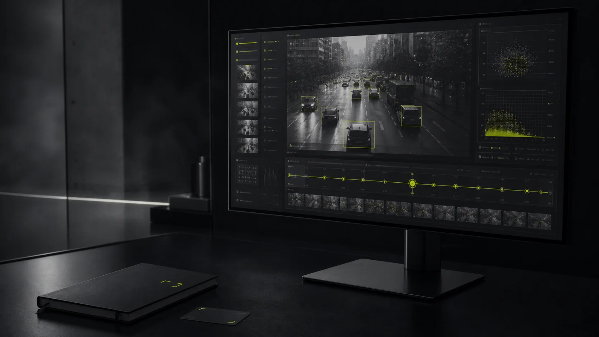
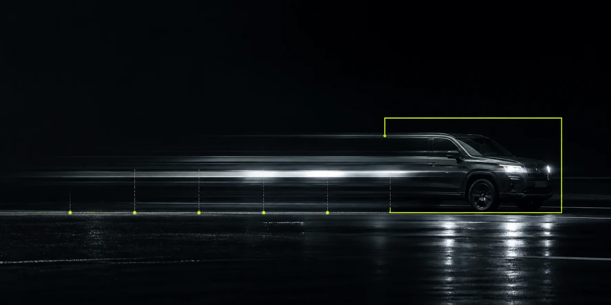

ACT 01
INPUT
Load the scene.
Bring a YOLO model, video, and versioned YAML configuration. Everything stays local.
Local-first robustness testing
CVFuzz probes your computer vision model with realistic transformations, isolates the minimum breaking change, and leaves you with evidence you can reproduce.
Controlled distortion. Clear evidence.
A model can look stable until weather shifts, light fades, or motion enters the frame. Aggregate scores hide the edge where confidence collapses.
CVFuzz searches that edge methodically—then preserves the frame, parameter, model, and configuration needed to see it again.
From input to evidence
One model. One source. Every configured condition evaluated as a distinct, reproducible stage.
Bring a YOLO model, video, and versioned YAML configuration. Everything stays local.
Render nine realistic conditions and search the severity where detections destabilize.
Inspect videos, metrics, failure frames, and portable run artifacts with no database.

Evidence, not guesswork
Compare the original stream against every augmentation. Follow confidence, retention, class changes, and localization drift across synchronized frames.
Built for real investigation
Independent components, portable outputs, and configuration you can review in version control.

Boundary search
Find the minimum parameter value that destabilizes a specific detected object.
Evaluate the original and every transformed video as separate, synchronized stages.
Detect missed objects, confidence collapse, class changes, and localization drift.
Keep every transform and parameter sweep explicit, reviewable, and reproducible in YAML.
Store manifests, JSONL, metrics, videos, and failure frames without a database or cloud service.
Run it locally
CVFuzz runs on Python 3.11 with CPU support and optional GPU acceleration. The first adapter supports Ultralytics YOLO detection models.
Read the full setup guide$ cd backend
$ python3.11 -m venv .venv
$ source .venv/bin/activate
$ pip install -e '.[dev,yolo]'
$ cvfuzz run model.pt street.mp4 \
--config cvfuzz.yaml
✓ boundary found · motion_blur · kernel_size=11